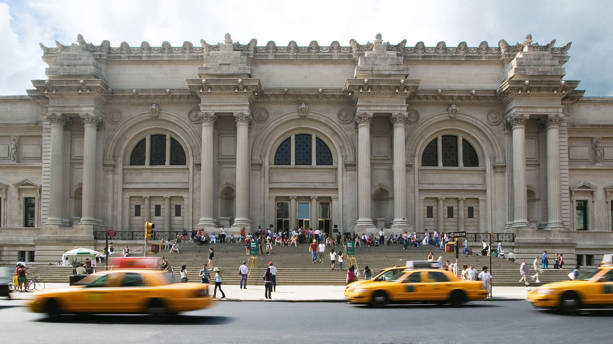
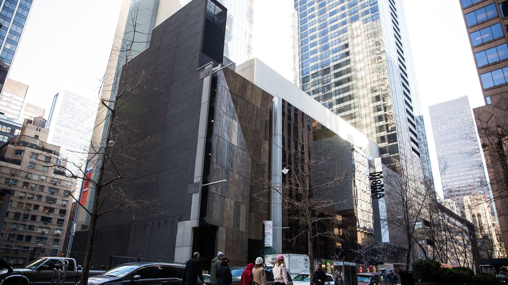
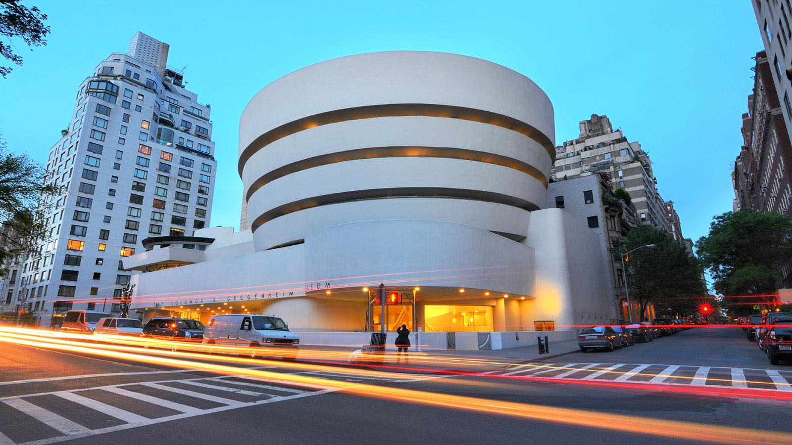

Art Museum in New York
Museums
Speical Days
Events
Contacts
1 / 3

Metropolitan Museum of Art
2 / 3

MoMA
3 / 3

The Solomon R. Guggenheim Museum
❮
❯
January
2017
Su
Mo
Tu
We
Th
Fr
Sa
1
2
3
4
5
6
7
8
9
10
11
12
13
14
15
16
17
18
19
20
21
22
23
24
25
26
27
28
29
30
31
TODAY'S
EVENTS
ALL ART MUSEUMS CLOSE ON MONDAY
UPCOMING
EVENTS
John Singer Sargent’s Mrs. Carl Meyer and Her Children
(@The Jewish Museum)
inHarlem
(@The Studio Museum in Harlem)
Nan Goldin: The Ballad of Sexual Dependency
(@MoMA)
Marilyn Minter: Pretty/Dirty
(@Brooklyn Museum)